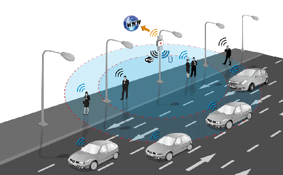

Li-Fi：可见光无线通信¶
Li-Fi（Light Fidelity）是指利用可见光来进行通信的方法，利用光来进行通信大家并不陌生，例如光纤就是典型的利用光信号来进行通信的方法。英国爱丁堡大学工程学院教授哈拉尔德·哈斯（Herald Haas）研发的一种利用可见光波谱(如灯泡发出的光)进行数据传输的全新无线传输技术。由于LED灯具有高速电调制性能，可通过肉眼不可察的高速明暗闪烁信号传输信息，例如LED开表示1，关表示0，但电子接收器或移动设备可以读取信号，甚至可以把信号返回房间天花板上的信号收发器，这就是LED灯能够在正常照明显示的同时，作为通信光源实现可见光泛在高速通信的根本原因。
2011年10月，哈罗德·哈斯教授在当年的全球科技娱乐设计大会（TED Global）上首次公开提出Li-Fi这一概念，并在2012年成立了PureLiFi（又称PureVLC）公司，成功实现了利用光传输数据的技术。2014年4月，一家俄罗斯公司Stins Coman宣布他们成功用Li-Fi搭建了无线局域网——BeamCaster，利用该网络可以以每秒1.25G字节的速率传输数据。

1. Li-Fi产生背景¶
Wi-Fi技术已经越来越普及，然而由于成本问题，有限的Wi-Fi热点是的无线网络只能覆盖部分区域。而且一些射频无线通信敏感区域，如飞机上、矿井中，都不适宜使用Wi-Fi。利用射频信号的Wi-Fi本质上就有无线信号不稳定的问题，当服务设备过多时，上网速度也会变得很慢。如何扩大无线网络覆盖范围，提高数据率是科研人员探索的方向。
自从电灯泡发明以来，人类生产生活区域一直被电灯所覆盖。哈斯教授和他爱丁堡大学的团队发明的Li-Fi就利用无处不在的电灯泡来实现数据传输，让人们可以享受无处不在的网络服务。通过给LED灯泡植入一个微小的芯片形成类似Wi-Fi热点的设备，使该灯泡照亮的区域内的终端设备能够随时接入网络。如果能够将全世界的电灯泡全部改造成Li-Fi热点，那么任何路灯都可以成为互联网接入点。与Wi-Fi设备相比，LED灯泡要廉价的多，有利于大范围部署应用。 而Li-Fi不仅可以提升互联网的覆盖范围，还可以提升数据传输速率。当前采取的无线数据传输方式是效率低下的电磁波，尤其是无线电波。无线电波存在很多局限性，它们较为稀有、成本昂贵并且只有确定的波段。而且，无线电波在整个电磁频谱中仅占很小的一部分。而随着用户对无线互联网需求的增长，可用的射频频谱正越来越少。在上一章介绍毫米波通信时，就分析到现有Wi-Fi运行的频段的带宽很窄。这些局限性使其无法跟上无线数据的步伐。而可见光的频谱宽度可达到射频频谱的1万倍，这意味着可见光通信可以带来更高的带宽，也就带来了更高的数据率。
Li-Fi的产生并不是为了替代Wi-Fi，而是作为有效的补充手段——用于对射频无线通信敏感的场合，比如机舱、矿井、核电站和电磁干扰敏感的医疗设备工作区域。飞机在飞行期间不允许使用手机，就是因为手机发出的无线信号会干扰飞行员与机场塔台之间的无线电通信和飞机罗盘的正确性，造成安全遗患。而Li-Fi是可见光通信，并不会出现这样的问题，只要将座位上方的LED阅读灯改造为Li-Fi热点，那么不仅可以在飞机上打电话，还可以上网。
可见光通信还可以应用于智能交通系统，在夜晚行车，驾驶员的视野受限，对于路况观测的不及时就会造成严重的交通事故。而通过路灯、车灯，通过Li-Fi技术，就有可能实现车与车直接、车与交通灯、车与路灯直接的通信，给驾驶员提供实时的交通路况信息，避免碰撞，保障安全驾驶。
2. Li-Fi优缺点¶
Li-Fi利用可见光进行通信，具有以下优点：
- 丰富的频谱资源： 可见光的频谱宽度可达到射频频谱的1万倍，丰富的频谱资源使Li-Fi能够利用更宽的频谱实现更高的传输数据率，提升网络速度。
- 低成本： LED灯泡较专用的Wi-Fi热点是非常廉价的，并且是人类生产生活的必需品，具有泛在性，几乎不需要额外的基础设施建设，部署、使用成本非常低。
- 安全性： Li-Fi由于可见光具有可遮挡性，无法穿墙，因此便于将信号限定在一定区域内，产生物理隔离，具有安全性。
- 无电磁辐射： 由于没有电磁辐射，Li-Fi的发射功率可以很高，且不对对人体产生电磁辐射影响。
- 无电磁干扰： 许多精密仪器对电磁干扰敏感，而Li-Fi并不使用无线电波，所以不会受到电磁干扰的限制，可以广泛应用于不适于射频无线通信的场合。
但是作为一种新兴的无线通信技术，Li-Fi还没有走出实验室，大规模的应用于实际系统中，这是因为Li-Fi还有一些亟待解决的问题:
- 易被遮挡： 可见光通信非常容易被遮挡，导致信号中断，可靠性有待提升。
- 光源间断问题： 虽然电灯泡在人类生产生活空间普遍存在，但是当有自然光存在时，电灯并不会打开，通信无法进行。
- 频繁切换： 单一LED设备覆盖范围有限，当终端设备不停移动时，需要频繁切换Li-Fi热点，容易导致丢失连接。
- 环境干扰： 环境光源有可能工作在同样的光谱频段，造成干扰，会因为信噪比过差而无法可靠通信。
- 用户友好的反向通信： 从Li-Fi热点到终端设备使用可见光是非常自然的。但是如何用户友好地让终端设备与热点通信是值得思考的问题。 相信没有人愿意在使用手机时还要忍受手机LED灯光照射自己的眼睛。
Li-Fi 作为一项前沿技术，其泛在性和频谱丰富性使之具有广泛的发展空间。 但作为一种新的无线通信技术，仍旧处在发展初期，还需要更多的研究，催生出更为成熟的技术和产品，为人类带来更加舒适便捷的智能化生活。